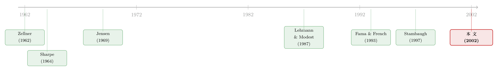

「不相干」的资产，凭什么能把基金的 alpha 算得更准？
本文读的是 Pástor & Stambaugh (2002, Journal of Financial Economics)：一只基金的 alpha 和夏普比率，可以用那些根本没出现在它们定义里的资产收益来估得更准。对一只小盘成长基金而言，新旧 alpha 估计的中位差高达 8.3%/年，新估计的精度大约是 OLS 的 3 倍；而全样本基金夏普比率的中位数会从 0.68 直接腰斩到一半以下，精度提升 4–5 倍。
1 一个看似无解的问题
先从一件每个基金研究者每天都在做的事说起。
你想知道一只基金到底有没有「本事」，于是你打开它的历史收益，把它对一两个被动基准（passive benchmark）做回归，取那个截距——这就是 alpha。Jensen (1969) 当年用 CAPM 的市场组合做基准，开创了这套做法；后来 Lehmann and Modest (1987) 把它推广到多基准。几十年下来，无论你信不信背后的定价模型，alpha 已经成了基金业绩的通用语言：晨星（Morningstar）报它，给机构客户做业绩的供应商也报它。
可问题是，这个截距估得准吗？
回归的截距，是出了名的「难伺候」。它的抽样误差和样本长度直接挂钩，而近二十年共同基金行业爆炸式扩张，市场上挤满了只有三五年历史的新基金。对这些基金，OLS 给出的 alpha 噪声大得惊人——你看到的那个数字，可能一大半是运气。
于是一个自然的问题冒出来了：有没有办法，在不改动 alpha 定义的前提下，把它估得更准一点？
本文的回答，乍听之下像是在说梦话：用那些和 alpha 八竿子打不着的资产。作者管它们叫「貌似不相干的资产」（seemingly unrelated assets）——它们既不在 alpha 的定义里，也不是夏普比率的一部分，按理说应该毫无信息含量。
可偏偏就是它们，能把估计精度提上去。这怎么可能？
2 两条暗线：信息从哪里来
要讲清楚这件事，得先把直觉掰开。作者给了两个极端的特例，把信息的来源讲得很透。
第一条暗线：定价模型。 假设基准资产恰好能给其他被动资产定价。考虑把一只非基准被动资产 r_{n,t} 对基准回归：
$$ r_{n,t} = \alpha_n + b_n' r_{B,t} + \varepsilon_{n,t} $$
如果基准真能定价，那么理论上 \(\alpha_n = 0\)。现在假设在同一段样本里，你算出的 \(\hat\alpha_n\) 是个负数——既然真值是零，这个负号就纯粹是抽样误差。而只要基金的残差 \(\varepsilon_{A,t}\) 和这只非基准资产的残差 \(\varepsilon_{n,t}\) 是正相关的，那么基金 alpha 的 OLS 估计里，多半也藏着一份同方向的负向抽样误差。换句话说，非基准资产像一面镜子，照出了你估基金 alpha 时「手抖」了多少。
第二条暗线：更长的历史。 这次假设基准根本不会定价（\(\alpha_n\) 完全未知）。设想一只新基金，历史比 r_{n,t} 和 r_{B,t} 都短。如果用基金这段短样本算出的 \(\hat\alpha_n\)，明显小于用一段更长样本算出的 \(\hat\alpha_n\)——而后者更精确——那就说明短样本里 \(\hat\alpha_n\) 偏低了。借着残差的正相关，同样的推断可以传导到基金 alpha 上。这里信息不来自定价模型，而来自非基准资产更长的收益历史。这正是 Stambaugh (1997) 处理「长短不一的历史」时的核心思想。
注意这两条暗线的微妙之处：它们利用的，都是基金残差与非基准资产残差之间的相关性。资产「不相干」是就 alpha 的定义而言的，但它们在统计上一点都不独立。论文标题里的「seemingly」（貌似），全部的张力就在这一个词上。
接着，一个更现实的问题是：现实哪有这么干净的极端？你既不会盲信基准能完美定价，也不会认为它们一无是处。于是本文真正落脚的，是一个居中的贝叶斯（Bayesian）版本：基准被认为对非基准资产「有定价能力，但不是分毫不差」。先验越是把 \(\alpha_n\) 压向零，信息就越多地从「短样本估计偏离零多少」里抽取；先验越分散，信息就越多地从「短样本估计与长样本估计之差」里抽取。两条暗线，在这里合二为一。
3 模型：一个截距的拆分
本文的方法骨架，其实可以浓缩成一个代数恒等式。把它讲清楚，整篇论文就通了。
定义三个回归。第一个是常规的 alpha 回归（k 个基准）：
$$ r_{A,t} = \alpha_A + \beta_A' r_{B,t} + \varepsilon_{A,t} $$
第二个，是把 m 个非基准资产对基准回归（多元版）：
$$ r_{N,t} = \alpha_N + B_N r_{B,t} + \varepsilon_{N,t} $$
第三个，也是关键的一步——把基金收益对全部 \(p=m+k\) 个被动资产（基准+非基准）一起回归：
$$ r_{A,t} = \delta_A + c_{AN}' r_{N,t} + c_{AB}' r_{B,t} + u_{A,t} $$
现在把第二式代入第三式，消掉 \(r_{N,t}\)，整理之后对照第一式，就能读出截距之间的关系：
$$ \alpha_A = \delta_A + c_{AN}' \alpha_N $$
这就是整篇论文的「发动机」（论文的第 7 式）。它说：基金的 alpha，等于「对全部资产回归的截距 \(\delta_A\)」加上「基金对非基准资产的暴露 \(c_{AN}\)，乘以非基准资产自己的定价误差 \(\alpha_N\)」。
妙就妙在右边这个拆分给了我们两个独立的入口去改进 \(\alpha_A\) 的估计：
- \(\delta_A\) 只能用基金自己的样本期估，没办法；但它和 \(\alpha_N\) 的任何估计都不相关（因为构造上 \(u_{A,t}\) 与 \(\varepsilon_{N,t}\) 正交）。
- \(\alpha_N\) 却可以被估得更准——要么用更长的历史（基准无定价能力的情形），要么直接设它为零（基准完美定价的情形）。
把更精确的 \(\alpha_N\) 估计代回第 7 式，就得到更精确的 \(\alpha_A\)。这个逻辑在 OLS、最大似然（MLE）、SUR 模型、乃至 GMM 下都成立——论文逐一验证了一遍，恒等式（第 13 式）
$$ \hat\alpha_A = \hat\delta_A + \hat c_{AN}' \hat\alpha_N $$
把全部估计量替换进去依然成立。
但这里有个诚实的告诫：替换一个「更精确」的 \(\hat\alpha_N\)，未必一定让 \(\hat\alpha_A\) 更准。当你设 \(\alpha_N=0\) 时，得到的替代估计就是 \(\hat\delta_A\)；它的均值确实是 \(\alpha_A\)，可它的方差有可能反超 \(\hat\alpha_A\)。原因在于 \(c_{AN}\) 也得估，而 \(\hat\delta_A\) 与 \(\hat c_{AN}\) 相关——非基准资产太多、而第 5 式的 \(R^2\) 又没相应提高时，「自由度」的损耗会盖过「解释力」的增益。所以作者只用 5 到 7 个非基准资产，并对斜率系数做了适度收缩（shrinkage）。这是个量纲上的取舍，不是免费的午餐。
4 一个漂亮的副产品：基准的定义可能不再重要
顺着第 7 式往下推，会撞见一个反直觉、却极其优雅的结论。
设想两个研究者，对「该把哪 p 个被动资产放进回归」达成一致，却在「其中哪几个算基准」上各执一词——他们挑的基准子集甚至可能毫无交集。但只要两人都相信自己的基准能完美定价剩下的资产，那么他们估出的 \(\alpha_A\) 会一模一样，哪怕他们对 alpha 的定义根本不同。
直觉是什么？当 \(\alpha_N=0\)，第 7 式塌缩成 \(\alpha_A = \delta_A\)，而 \(\delta_A\) 是基金对全部 p 个资产回归的截距，它压根不关心你把哪几个叫「基准」。用论文的话说：「如果你相信某个定价模型精确成立、并想要相对于它的 alpha，你根本不需要识别出这个模型。」 你要做的，只是把基金收益对所有被动资产回归，取那个截距。
这套做法和 Sharpe (1992) 的「风格分析」（style analysis）神似——右手边塞进一堆资产，是为了吸收收益里的各种风格变动，而不在乎其中只有一个子集配当定价模型的基准。背后的算术也朴素得很：往回归右边添加一个「已被现有资产定价」的资产，会压低残差标准差，却不改变真实的回归截距。精度上去了，靶心没动。
于是实证上出现了一个很解气的现象：当估计纳入非基准资产后，alpha 的定义变得不那么要紧了，有时甚至完全无关。 OLS 下，CAPM alpha 和 Fama-French alpha 的中位差，全样本是 2.3%/年、小盘成长基金高达 8.1%/年；一旦纳入非基准资产（但不假设基准给它们定价），这两个数字掉到 1.2% 和 2.0%；若假设基准完美定价，两种模型下的 alpha 完全相同。
一个小小的反讽：只有当你不假设基准能完美定价时，「谁是基准」才重新变得重要——它此时不仅决定 alpha 的定义，还决定怎么估它。完美定价反而把这个选择「抹平」了。
5 数据与结果：差距有多大
讲完机理，来看真刀真枪的数字。
数据。 样本是 1963 年 7 月到 1998 年 12 月共 35.5 年的月度数据，覆盖 2,609 只股票型共同基金（CRSP 基金库，作者做了不少数据订正）。被动资产是 8 个用机械规则构造的组合。基准最多三个：Fama and French (1993) 的三因子——市场超额收益 MKT、市值价差 SMB、账面市值比价差 HML。估 CAPM alpha 时只用 MKT，于是 SMB、HML 自动变成非基准资产；再加上 CMS（一个「特征匹配价差」）等共五个序列充当非基准资产。任意单只基金的样本期，都是这 35.5 年的一个子集——这正是「长短历史」那条暗线能发力的土壤。
结果一：alpha 大变样。 假设你完全不信 CAPM，却仍想报一只小盘成长基金相对单一市场基准的传统 alpha。OLS 估计和纳入非基准信息的替代估计之间，绝对差的中位数是 8.3%/年；若反过来你完全信 CAPM，这个中位差是 7.2%。两种情形下，替代估计对中位的小盘成长基金都比 OLS 精确约 3 倍。八个百分点的年化差距，足以把一只基金从「平庸」翻成「灾难」，或反过来。
结果二：夏普比率几乎腰斩。 全样本里，用老办法（只拿基金自己的历史）估出的夏普比率中位数是 0.68（年化）；一旦用上貌似不相干的被动资产里的信息，中位数掉到不足其一半，而新估计通常比老估计精确 4 到 5 倍。
结果三：排名几乎重洗。 这是最刺眼的。在历史不少于三年的基金里，按老、新两套夏普比率排名，同时进入前十分位的只有约 2%；而那些按老办法排进前十分位的基金，约 30% 在新排名里跌到了后三分之二。换句话说，传统夏普比率排出来的「明星榜」，很大一部分是噪声堆出来的海市蜃楼。
（关于「跑赢」本身会随持有期限缩水这件事，可参见《「跑赢大盘」是会过期的》；而把 alpha、beta 当作会随时间漂移的对象来估，则见《会动的 beta》。）
至于结论本身的方向，本文和无数前作一致：大多数股票型基金的 alpha 是负的。 对每个投资目标、每个年龄组，在剔除非基准资产时，「该组基金平均 CAPM alpha 为负」的后验概率都接近 100%；换成多基准、或用上非基准信息后，绝大多数基金的 alpha 依旧为负。本文动的不是「基金赚不赚钱」的结论，而是「你有多大把握说出这个结论」。
6 文献脉络
把这篇论文放回它的坐标系里，会看得更清楚。
源头有两条河。一条是业绩评估：Sharpe (1964) 与 Lintner (1965) 立起 CAPM，Jensen (1969) 用它定义并估计基金 alpha；Ross (1976) 的套利定价理论（APT）打开多因子的门，Lehmann and Modest (1987) 顺势把 alpha 推向多基准；再到 Fama and French (1993) 的三因子、Carhart (1997) 的四因子，基准的「菜单」越铺越长——也正因为菜单太长，人们发现 OLS alpha 对基准设定异常敏感，这正是本文要治的病。另一条河是计量工具：Zellner (1962) 的「貌似不相关回归」（SUR）——论文标题里的「seemingly unrelated」正是向它致敬——以及 Stambaugh (1997) 对「长短不一历史」的处理，给了本文「借长历史估短历史」的弹药。

本文站在这两条河的交汇处：它用一个截距拆分（第 7 式），把「定价模型」和「长历史」两种信息源，统一进一个贝叶斯框架，去改进 alpha 与夏普比率的估计精度。它也是 Pástor 与 Stambaugh 同期一系列工作的方法基石——Pástor and Stambaugh (2000) 比较定价模型，以及与本文同卷同年的姊妹篇 Pástor and Stambaugh (2002)，把这套机器用到了真实的基金选择与投资上（见《买主动基金，可能恰恰是因为你不相信经理有本事》）；Baks, Metrick and Wachter (2001) 则从另一个角度问：信息先验能多大程度上劝退一只主动基金。本文刻意把对业绩本身的先验设成「完全无信息」（diffuse），就是为了把舞台单独留给「貌似不相干的资产」这一个主角。
7 评论与延伸（Q&A + 研究方向）
(a) 几个可能的疑问
Q：这不就是「往回归右边多塞几个变量」吗，凭什么算贡献？
不是。如果只是把非基准资产塞进同一段样本回归，你得到的是 \(\delta_A\)，而它的方差未必更小（见第 3 节的告诫）。真正的贡献在于：第 7 式把 \(\alpha_A\) 拆成两块，让你能用基金样本之外的信息（更长历史、或定价先验）单独改进 \(\alpha_N\) 那一块，再代回去。信息是从样本外借来的，这是 OLS 做不到的。
Q：「貌似不相干」的资产，会不会其实是偷偷相干的，结论是循环论证？
它们在定义上确实与 alpha 无关——alpha 只由基金和基准定义。它们在统计上相干（残差相关 \(c_{AN}\neq 0\)），而这种相干正是信息的来源，不是 bug。论文从头到尾没假设它们进入 alpha 的定义，所以不构成循环。
Q：那个「基准定义无所谓」的结论，是不是太强了？
它有个硬前提：假设基准完美定价非基准资产（\(\alpha_N=0\)）。在这个假设下 \(\alpha_A=\delta_A\)，与基准选择无关。一旦放松这个假设，基准的选择立刻重新变得重要——既影响定义也影响估计。所以这不是「定价模型不重要」，而是「在完美定价的极端下，识别模型这一步可以省掉」。
Q：夏普比率腰斩，是不是因为贝叶斯方法引入了向下的偏差？
主要不是先验拉低的——本文对业绩用的是无信息先验。腰斩来自两点：一是更长历史让基金收益的波动率（夏普比率的分母）估得更老实，二是把定价关系用到期望收益（分子）上。老办法只用基金自己那段短历史，往往低估了波动、高估了夏普。新估计更准，而「更准」恰好意味着更低。
Q：5–7 个非基准资产是不是太少，会不会漏掉信息？
这是精度与自由度的权衡。资产太多、\(R^2\) 提升不够时，估 \(c_{AN}\) 的噪声会反噬精度（第 3 节）。作者用收缩技术给斜率系数「打补丁」，并坦承「用更高频数据提高斜率估计精度」是未来方向。这是个工程取舍，不是理论上限。
Q：结论说大多数基金 alpha 为负——这篇到底改了什么？
没改方向，改的是置信度和排名。负 alpha 的定性结论很稳健；但具体哪只基金多负、谁排前谁排后，老办法给的答案大量是噪声——前十分位里只有约 2% 经得起新方法的复核。本文动的是「精度」，不是「符号」。
(b) 几个可能的研究问题与提案
1. 把这套机器搬到公司债基金上。
【经济故事】公司债基金的业绩评估比股票更棘手：基准（久期、信用、流动性因子）本身就充满争议，而很多债券型基金历史偏短、收益序列还高度平滑。第 7 式的「借长历史 + 借定价关系」恰好对症。 【可行性】中。数据可得（CRSP/Morningstar 债基 + 一组债券因子被动组合），识别靠的是残差相关结构，方法是现成的。难点在于债券收益的平滑与非正态会让 \(c_{AN}\) 的估计更不稳——需要先处理收益平滑。
2. 把「貌似不相干的资产」选成流动性因子，专测流动性时机。
【经济故事】如果一只基金的残差与某个流动性价差组合的残差强相关，那这个流动性组合就是它最有信息量的「镜子」。这能在不改 alpha 定义的前提下，更精确地剥离基金里那部分「靠承担流动性风险」赚到的钱。 【可行性】中。需要构造可交易的流动性因子组合，并验证 \(c_{AN}\) 的稳定性；识别上要小心流动性因子与既有基准的共线性。
3. 外资持有人视角下的「貌似不相干资产」。
【经济故事】评估一只新兴市场基金时，本国可投资股票的历史往往比基金短，而一些「外资可买度」高的全球被动组合历史更长。用后者当非基准资产，或许能把短历史新兴市场基金的 alpha 估得更稳。 【可行性】中偏低。可投资度数据可得，但跨市场的残差相关结构容易被汇率和资本管制污染，识别需要额外假设。
4. 用机器学习的收缩替代论文里的固定收缩。
【经济故事】本文对第 5 式的斜率系数做的是「适度收缩」，参数是手工设的。自由度问题本质上是个高维估计问题，正好是收缩/正则化方法的主场。 【可行性】高。在现成的基金面板上把贝叶斯收缩换成数据驱动的正则化即可，与《压缩横截面》的思路天然衔接，doable。
5. 把无信息先验换成信息先验，看排名稳定性。
【经济故事】本文为了凸显「貌似不相干资产」的贡献，刻意用无信息先验。但真实投资者对业绩是有先验的。引入对 alpha 的信息先验后，前十分位的「2% 重合率」会上升还是继续崩？ 【可行性】高。Pástor and Stambaugh (2002) 姊妹篇已搭好框架，做的是组合层面；把它落到「排名稳定性」这个具体问题上是直接的扩展。
8 我的判断
这是一篇「方法即贡献」的论文，而且它的方法漂亮得近乎反直觉：一个三行的代数恒等式（第 7 式），把两种风马牛不相及的信息源——定价模型的先验和资产更长的历史——焊进了同一个贝叶斯框架，再用它把基金业绩的两把标尺同时磨利。8.3% 的 alpha 中位差、夏普比率的腰斩、前十分位仅 2% 的重合率，这些数字的冲击力，足以让任何一个只会跑 OLS alpha 的人后背发凉。它真正的洞见不在「基金赚不赚钱」，而在「我们对自己的业绩判断，到底有多少是噪声」——这个问题，比结论本身更值得被反复念叨。
对识别的担忧，我有两点。其一，整套机器的精度增益，系于残差相关结构 \(c_{AN}\) 的稳定性；论文已诚实指出，非基准资产太多会让自由度反噬精度，而 \(c_{AN}\) 在不同子样本、不同市场状态下是否稳定，文中着墨不多。其二，「基准完美定价」这个让 alpha 定义变得无关的漂亮结论，是个极端假设——现实中它既不成立，也无法检验，居中的贝叶斯版本到底落在两个极端的哪个位置，很大程度上由先验拍板，而先验本身是研究者的选择。
后续我最想看到的，是把这套方法搬到公司债与信用市场：那里基准更含糊、历史更参差、收益更平滑，正是「貌似不相干资产」最该大显身手、也最容易被残差结构反噬的地方。谁能在那片更脏的数据上把精度增益做实，谁就把这篇 2002 年的洞见真正向前推了一步。
参考文献
Baks, K. P., Metrick, A., Wachter, J. (2001). Should investors avoid all actively managed mutual funds? A study in Bayesian performance evaluation. Journal of Finance 56(1), 45–85.
Carhart, M. M. (1997). On persistence in mutual fund performance. Journal of Finance 52(1), 57–82.
Fama, E. F., French, K. R. (1993). Common risk factors in the returns on stocks and bonds. Journal of Financial Economics 33(1), 3–56.
Jensen, M. C. (1969). Risk, the pricing of capital assets, and the evaluation of investment portfolios. Journal of Business 42(2), 167–247.
Lehmann, B. N., Modest, D. M. (1987). Mutual fund performance evaluation: a comparison of benchmarks and benchmark comparisons. Journal of Finance 42(2), 233–265.
Lintner, J. (1965). The valuation of risk assets and the selection of risky investments in stock portfolios and capital budgets. Review of Economics and Statistics 47(1), 13–37.
Pástor, Ľ., Stambaugh, R. F. (2000). Comparing asset pricing models: an investment perspective. Journal of Financial Economics 56(3), 335–381.
Pástor, Ľ., Stambaugh, R. F. (2002). Investing in equity mutual funds. Journal of Financial Economics 63(3), 351–380.
Ross, S. A. (1976). The arbitrage theory of capital asset pricing. Journal of Economic Theory 13(3), 341–360.
Sharpe, W. F. (1964). Capital asset prices: a theory of market equilibrium under conditions of risk. Journal of Finance 19(3), 425–442.
Sharpe, W. F. (1992). Asset allocation: management style and performance measurement. Journal of Portfolio Management 18(2), 7–19.
Stambaugh, R. F. (1997). Analyzing investments whose histories differ in length. Journal of Financial Economics 45(3), 285–331.
Zellner, A. (1962). An efficient method of estimating seemingly unrelated regressions and tests for aggregation bias. Journal of the American Statistical Association 57(298), 348–368.